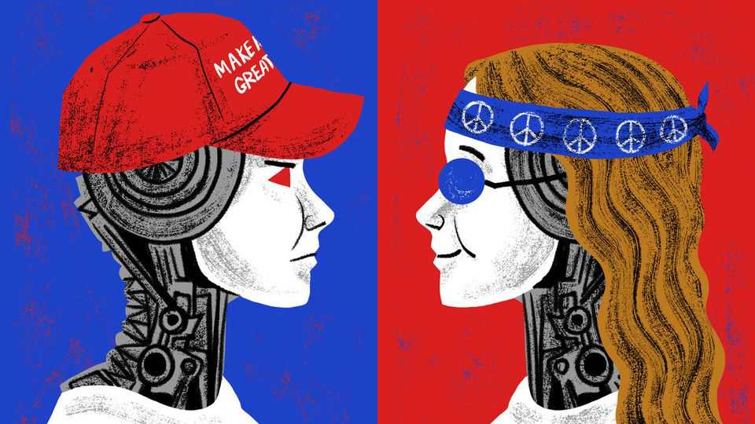

When China’s open-source AI is a trap
America’s quest for AI dominance is scary. China is not the solution
July 16th 2026

CHINA’S LEADER, Xi Jinping, is too stern to sing or dance in public—no Donald Trump-style piston-arm disco moves for him. This is a shame, for it would save time if he binned his planned remarks when the World Artificial Intelligence Conference (WAIC) opens in Shanghai on July 17th, and sang instead. Specifically, he could unleash his rich baritone on the hippy anthem, “I’d like to teach the world to sing, in perfect harmoneee.”
Puzzled delegates might frown. But it would be cheering if Mr Xi sang: “I’d like to build a world a home, and furnish it with love.” And as a guide to China’s real-world AI ambitions, it would be about as helpful as an official speech. Communist Party media have offered previews of what the WAIC may hear, including such vapid phrases as “those who walk together go far” and “global AI for good”. In China’s telling, benevolence explains why its large language models (LLMs) are open-source or open-weight (tech-speak for models that users can download, run on their own servers and customise). China calls open-source AI a “shared asset for all humanity”, notably users in less wealthy countries.
The UN needs to lead a push for global AI governance, Mr Xi is likely to say in Shanghai. As new rules are crafted, China stands ready to offer a dose of “Chinese wisdom”. Decoding that jargon is not hard. In policy forums and papers, China promotes “inclusive” AI rules that respect different political systems and the sovereign rights of states. The contrast with America is deliberate. Successive American presidents and democratic allies have talked of embedding liberal values and freedoms in AI. China paints that as Western chauvinism. Instead, it offers countries non-judgmental AI for economic development, with no pesky questions about censorship, or about how foreign leaders gain or maintain their power.
Mr Xi can expect a friendly hearing from many in Shanghai, and not just delegates from dictatorships. These are jarring times for users of American AI technologies. In recent weeks the Trump administration has readily revoked access to powerful AI tools, if it felt controls were needed to defend America’s national security or to maintain what the White House likes to call “AI dominance”.
In European and other Western democracies, there is interest in using Chinese models to avoid total dependence on America. Alas, if countries fear domination by a control-obsessed superpower, they might not want to pin all their hopes on China. Strict rules require Chinese AI firms to uphold national security, social stability and “core socialist values”. Its cyber-regulators test LLMs, bots and agents for political compliance, bombarding them with tricky questions. The effects can be startling. Last year American researchers asked Miiloo, a baby-voiced, AI-enabled doll exported from China, about the status of Taiwan. The island “is an inalienable part of China”, replied the toy, and this “cannot be refuted”.
As well as an obsession with control, China has a record of using its industrial might for dominance. Just ask Mr Trump, brought to heel last year when China curbed exports of vital, Chinese-processed rare-earth elements and magnets. In the AI realm, China’s dream is to sell the world an ecosystem, involving Chinese-made models and tools, computer chips, data centres and cooling systems. Ideally, such infrastructure should be powered by Chinese-made electrical grids and renewable energy plants.
Chinese officials present open-source AI technologies as a gift to the world. In reality, openness is a logical strategy for laggards. The performance of China’s top models remains some way behind that of the best American LLMs. That makes it rational for Chinese firms to woo foreign customers with cheaper models that users can download onto their own servers, as an alternative to expensive, proprietary American models. Within China, state planners want companies to develop clever AI applications to unleash a productivity revolution and a boom in consumer consumption. Deploying cheap, open-source tools helps with that.
Even so, Chinese leaders appear to be reviewing that vaunted commitment to AI openness. There are many reasons why. Officials dread foreigners swiping tech secrets. In April Chinese regulators ordered Meta, the American tech giant, to unwind its purchase of Manus, a startup specialising in AI agents (no matter that the Chinese co-founders had moved Manus to Singapore). China has since tightened rules on all cross-border AI deals. Earlier this month Reuters, a news agency, reported on recent discussions between Chinese regulators and companies about possibly limiting foreigners’ access to China’s most advanced models.
The performance of the best models is creating new reasons to think hard about AI safety. In Beijing earlier this year, several Chinese military types expressed shock at how America and Israel had used AI to find targets in Iran (even if Mr Trump’s botched war inspires scorn in China, broadly). If China develops near-Mythos-grade tools that could build destructive cyber- or bioweapons, its leaders would have good cause to fear giving adversaries or bad actors access to that technology.
Finally, competition with America is set to intensify. Rumours abound that the Trump administration is weighing whether to stop Americans using Chinese AI models, at least for government work. National security is one explanation, but so is the growing popularity of Chinese LLMs as a cheap tool for basic tasks.
For all these reasons, embracing China is a risky hedge against a domineering America. Like a secret policeman in a hippy wig, China has always been an unlikely champion of openness. Party chiefs enjoy the propaganda win of painting America as a bully. They hope that low-cost AI will hook foreigners on Chinese digital infrastructure. But if openness ever clashes with national security or political power, they will choose control in an instant.■
Subscribers to The Economist can sign up to our Opinion newsletter, which brings together the best of our leaders, columns, guest essays and reader correspondence.